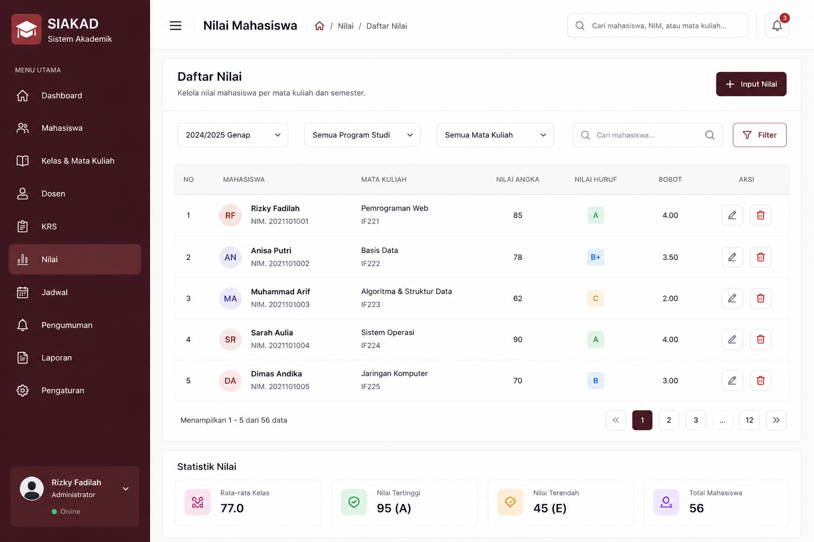

Sistem Akademik (SIAKAD)
Pengelolaan Nilai, Jadwal, dan Portal Akademik
About This Project
Aplikasi Akademik (SIAKAD) adalah sistem berbasis web yang dirancang untuk menggantikan proses
akademik manual.
Proyek ini dikembangkan dari awal (from scratch) menggunakan teknologi HTML5 CSS3 & JavaScript.
Tujuan utama sistem ini adalah memberikan kemudahan, kecepatan, dan akurasi data bagi pihak sekolah
maupun siswa.
Main Features
- Dashboard:
Dashboard menampilkan ringkasan data akademik secara real-time. - Student Management:
Admin dapat mengelola data siswa (tambah, edit, hapus). - Teacher Management:
Admin dapat mengelola data guru (tambah, edit, hapus). - Course Management:
Admin dapat mengelola data mata pelajaran (tambah, edit, hapus). - Class Management:
Admin dapat mengelola data kelas (tambah, edit, hapus). - Schedule Management:
Admin dapat membuat jadwal pelajaran. - Grade Management:
Admin dapat membuat nilai pelajaran. - Report Management:
Admin dapat membuat laporan akademik.